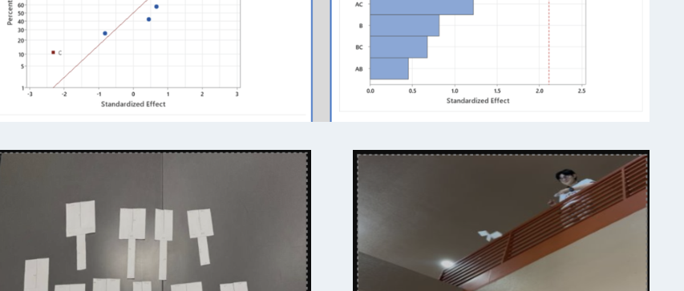
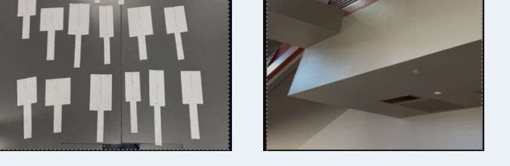

ENGINEERING PROJECT
Paper Helicopter Design Optimization
Tools: Minitab | Design of Experiments (DOE) | Statistical Analysis
Objective
Determined which design factors had the greatest effect on paper-helicopter flight time and used the results to improve performance.
Process
Tested combinations of six factors: width, length, height, paperclip weight, wing angle, and testing environment. We used a fractional factorial design for 32 randomized trials, dropping each helicopter from approximately 20 feet.
Analysis & Optimization
Used Minitab for ANOVA, Pareto charts, main effects, interaction effects, and regression analysis. We then focused a second experiment on the most influential factors to further optimize flight time.
Results
Wing angle was one of the most important factors affecting flight performance; length and paperclip weight also showed meaningful effects. The project demonstrated how DOE can support data-driven design improvement.
Skills Demonstrated
Design of Experiments · Minitab · ANOVA · Data Analysis · Process Optimization · Problem Solving · Teamwork

